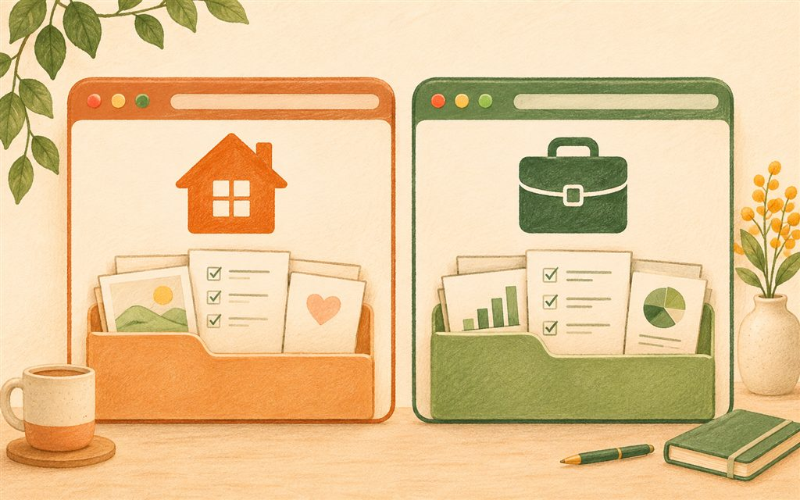
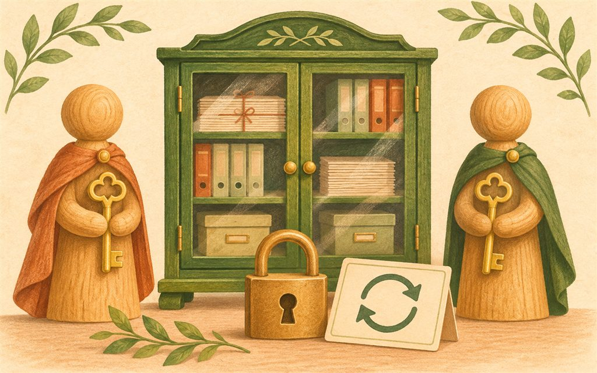
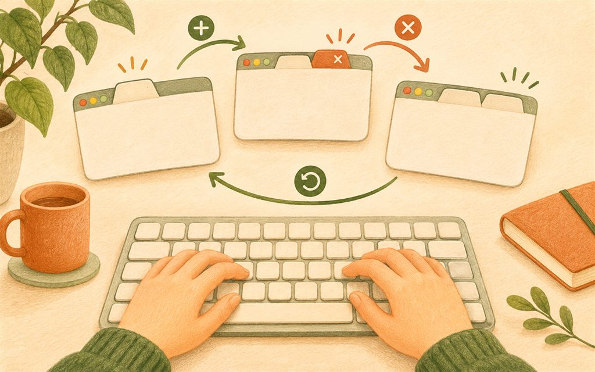

계정을 나누면, 일과 쉼의 경계가 생깁니다
교육 첫날 가장 많이 막히는 곳은 어려운 기능이 아니라 ‘어느 계정으로 로그인했는가’입니다.
기관 계정을 받으셨더라도 개인 계정과 한 브라우저에 섞여 있으면, 방금 만든 문서가 누구의 것인지 헷갈립니다. 공유하려던 자료가 엉뚱한 계정으로 가기도 합니다. 시작하기 전에 개인용과 기관용 크롬 프로필을 나누어 두세요. 즐겨찾기와 비밀번호를 따로 보관하고, 창을 바꾸며 일할 수 있습니다.
“핸드폰 다 꺼내봐요. 최근에 대화한 다섯 사람 누군지 봐봐요. 친구랑 가족인가요, 아니면 회사 사람인가요?”강의에서 함께 생각해 본 질문
휴대폰에서 최근 대화를 살펴보세요
최근에 대화한 다섯 사람을 떠올려 보세요. 대부분 직장 동료는 아닌가요? 친구·가족과 이야기하려고 가입한 메신저가 어느새 업무 도구가 되면, 휴가 중에도 알림이 울립니다.
업무 계정을 따로 두는 일은 보안만의 문제가 아닙니다. 쉴 때 쉬기 위한 장치이기도 합니다. 이 질문의 답을 다른 사람에게 보여 주실 필요는 없습니다.
사람이 바뀌어도 자료는 남아야 합니다
개인 계정에 업무 자료가 쌓이면 담당자가 떠날 때 기관이 자료에 접근하기 어려워집니다. 기관 계정으로 일해야 인수인계와 자료 관리를 기관 안에서 이어 갈 수 있습니다.
개인 계정으로 일하는 것 자체가 자료 유출의 위험이 됩니다
강의에서는 ‘기관의 업무가 개인 계정으로 가는 것 자체도 유출로 볼 수 있다’고 강조했습니다. 업무 정보가 기관의 관리 범위 밖에 모이면, 이후 정보 수집과 관리에도 문제가 생길 수 있다는 뜻입니다. 기관 자료는 기관 계정으로 만들고 보관하는 습관부터 시작해 주세요.
비용 때문에 개인 계정만 쓰고 계셨다면 비영리단체 지원을 확인해 보세요. 자격을 충족하고 승인을 받은 비영리단체는 구글 워크스페이스 비영리용 무료 버전을 이용할 수 있습니다.
계정을 하나 더 넣는 것과
일할 창을 나누는 것은 다릅니다
구글 웹페이지의 계정 메뉴에서 「다른 계정 추가」를 누르면 같은 크롬 프로필 안에서 여러 구글 계정에 로그인하게 됩니다. 계정은 바꿀 수 있지만 즐겨찾기·방문 기록·저장된 비밀번호를 계정별 작업 공간으로 나누는 것은 아닙니다.
이번 교육에서 할 일은 브라우저의 「크롬 프로필 추가」입니다. 기관 계정으로 로그인한 별도 프로필을 만들면 기관용 창을 따로 열 수 있습니다. 아래 두 방식을 눌러 차이를 확인해 보세요.
한 작업 공간에 두 계정이 들어 있습니다
웹서비스에서 계정은 전환할 수 있습니다. 문서를 만들거나 공유할 때마다 현재 계정을 잘 확인해야 합니다.
즐겨찾기와 브라우저 설정을 기관용으로 따로 나누지는 않습니다.
개인 즐겨찾기
개인용 저장 정보
업무 즐겨찾기
기관용 저장 정보
이 교육에서 권하는 방식입니다. 창을 바꾸면 작업 공간도 바뀝니다.

기관 계정 전용 창, 함께 만들어 보세요
먼저 기관에서 받은 이메일 주소와 로그인 방법을 준비해 주세요. 계정을 만들어 두었어도 로그인이 되지 않아 교육 첫 화면에서 멈추는 일이 생깁니다. 교육 전에 각자 로그인이 되는지 한 번 확인하면, 당일 한 시간을 아끼는 준비가 됩니다.
다음은 개인별 업무 컴퓨터에서 따라 하는 순서입니다. ‘다음 단계’를 눌러 흐름을 익힌 뒤 실제 크롬에서 해 보세요.
크롬 창 → 오른쪽 위 프로필
브라우저의 프로필 아이콘을 찾으세요
크롬을 열고 주소창 오른쪽에 있는 동그란 프로필 아이콘을 누릅니다. 웹페이지 안의 계정 사진과 헷갈리지 않도록, 브라우저 도구 모음에서 찾아 주세요.
메뉴 이름과 화면은 크롬 버전이나 기관의 관리 설정에 따라 조금 다를 수 있습니다. 기관 정책으로 동기화가 제한되어 있으면 관리자에게 문의해 주세요.
창을 연 다음, 문서의 계정도 확인하세요
기관용 프로필의 이름이나 색을 개인용과 다르게 정하면 창을 구별하기 쉽습니다. 새 창에서 드라이브를 열고, 웹페이지 오른쪽 위 계정 메뉴에 기관 이메일 주소가 표시되는지 확인해 주세요. 기관용 프로필 안에 개인 계정을 다시 추가하지 않는 습관도 중요합니다.
비밀번호는 스스로,
계정의 관리는 기관 안에서
기관 계정이 있다고 해서 비밀번호 관리까지 다른 사람이 대신할 수는 없습니다. 본인의 로그인 정보를 알고 안전하게 관리하는 일은 각자의 몫입니다. 로그인에 문제가 생겼을 때 연락할 관리자도 미리 알아 두세요.
관리자를 한 사람에게만 맡기지 마세요
기관 관리자는 최소 두 명 이상 지정해 주세요. 한 사람이 부재하거나 계정에 접근하지 못해도 다른 관리자가 업무를 이어 갈 수 있어야 합니다.
관리자도 기존 비밀번호는 볼 수 없습니다
잊어버린 비밀번호를 관리자에게 ‘알려 달라’고 요청하는 대신, 재설정을 요청합니다. 권한이 있는 관리자는 새 비밀번호로 바꾸는 절차를 도울 수 있습니다.

마우스를 잠시 놓고,
세 가지를 손에 익혀 보세요
“마우스는 시간을 잡아먹는 귀신이에요.”강의에서 기억할 한마디
단축키는 시험처럼 외우는 것이 아닙니다. 자주 하는 일을 손이 먼저 누르도록 몸으로 익히는 연습입니다. 우선 탭을 열고, 닫고, 되살리는 세 가지부터 해 보세요. 아래 표기는 윈도 컴퓨터 기준입니다.

다른 페이지를 보려고 새 자리를 만들 때 사용합니다.
작업을 마친 탭을 정리할 때 사용합니다.
실수로 닫은 탭이나 최근에 닫은 창을 다시 열 때 사용합니다.
퇴근 후 다음 날 크롬을 켰을 때도 Ctrl+Shift+T로 어제 닫은 작업 화면을 다시 열어 볼 수 있습니다. 익숙해지시면 「크롬 단축키」, 「엑셀 단축키」로 검색해 연습 영상을 찾아보세요.
업무 자료를 보고 있습니다
버튼은 이 연습장 안의 탭만 바꿉니다.① 새 탭 열기 → ② 지금 탭 닫기 → ③ 되살리기 순서로 눌러 보세요.
실제 키보드 단축키는 브라우저 자체에 적용됩니다. 이 페이지를 읽으면서 연습하실 때는 먼저 위 버튼을 이용해 주세요.
자주 묻는 질문
실습 현장에서 막히기 쉬운 지점을 모았습니다. 질문을 누르면 답이 펼쳐집니다.
기관 계정을 받았는데 첫 화면에서 로그인이 안 됩니다.
기관 이메일 주소를 정확히 입력했는지 확인하고, 기관이 안내한 로그인 방법을 따라 주세요. 비밀번호를 잊으셨다면 관리자에게 재설정을 요청합니다. 교육 전에 실제 로그인이 되는지 확인해 두시면 현장에서 계정 문제로 멈추는 시간을 줄일 수 있습니다. 비밀번호 관리 다시 보기
이미 「다른 계정 추가」를 눌렀는데 준비가 끝난 것 아닌가요?
같은 프로필 안에서 구글 계정만 추가한 상태일 수 있습니다. 크롬 도구 모음의 프로필 메뉴에서 「크롬 프로필 추가」로 별도 작업 공간을 만들어 주세요. 기관 계정으로 로그인한 새 창에서 계정 주소를 다시 확인합니다. 두 방식 비교하기
반드시 크롬을 써야 하나요? 엣지도 가능한가요?
크롬·파이어폭스·사파리·엣지는 모두 공식 지원 브라우저입니다. 기능 지원 범위에는 차이가 있습니다. 모든 워크스페이스 기능을 지원하는 크롬으로 실습하면 교육의 화면과 순서를 맞추기 쉽습니다. 지원 브라우저 설명 보기
개인 계정으로 만든 업무 문서는 왜 문제가 되나요?
문서와 업무 정보가 기관의 관리 범위 밖에 쌓일 수 있기 때문입니다. 담당자가 바뀌면 자료 접근과 인수인계에도 어려움이 생깁니다. 앞으로는 기관 계정으로 문서를 만들고 보관해 주세요. 계정을 나누는 이유 다시 보기
관리자에게 제 비밀번호를 물어보면 알 수 있나요?
관리자도 기존 비밀번호를 조회할 수 없습니다. 잊으셨다면 권한이 있는 관리자에게 재설정을 요청하세요. 비밀번호 관리는 스스로 하고, 문제가 있을 때 도움을 요청하는 흐름으로 이해하시면 됩니다. 상황별 재설정 방법 보기
관리자는 왜 최소 두 명이 필요한가요?
한 사람이 부재하거나 계정에 접근하지 못해도 다른 사람이 기관 계정 관리를 이어 갈 수 있어야 하기 때문입니다. 같은 관리자 비밀번호를 공유하는 대신 각자의 관리자 계정을 사용하고, 필요한 권한과 복구 방법을 준비해 두세요.
동기화를 켜는 화면이 보이지 않습니다.
버전에 따라 「로그인」, 「계정에 저장」 등의 문구로 보이거나 기관 정책으로 제한될 수 있습니다. 기관 계정으로 로그인한 별도 프로필이 맞는지 먼저 확인하고, 기관의 허용 범위는 관리자에게 문의해 주세요. 프로필 만들기 단계 보기
방금 닫은 탭은 어떻게 다시 여나요?
윈도에서는 Ctrl+Shift+T, 맥에서는 Command+Shift+T를 누릅니다. 최근에 닫은 탭이나 창을 되열 수 있습니다. 이 기능이 문서 저장을 대신하지는 않습니다. 작은 탭 연습장에서 해 보기
세 문제로 확인해 보세요
답을 고르고 ‘정답과 해설 보기’를 눌러 주세요. 틀려도 다시 고르실 수 있습니다.
세 가지를 이해하셨다면, 이제 내 컴퓨터에서 준비해 보세요.
오늘의 과제
직접 해 보신 항목에 표시해 주세요.
모르는 항목은 본문으로 돌아가 천천히 다시 따라 하시면 됩니다.
체크한 내용은 이 브라우저에만 저장됩니다. 실제 계정 정보나 비밀번호는 입력하거나 저장하지 않습니다.
준비를 마치셨습니다. 이제 기관용 창에서 다음 배움을 시작해 보세요.